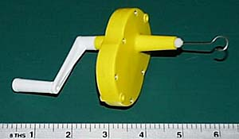

|
Winding the motor of a rubber powered model is no longer the "finger in the prop" affair it was when we were growing up. For longer duration, motors are lubricated and stretched while winding with a mechanical device, usually offering ratios like 5:1, 10:1, 15:1, 20:1. This allows many more turns to be packed into a motor in less time. Below are a few pictures of some of the winders available. These are generally used for smaller sport and indoor type models. The larger rubber motors for outdoor models require heavier gears and handles. | |||
|

Knight & Pridham 15:1 Winder |
The K&P winders are available in 5:1, 10:1 and 15:1 winding ratios and are well worth picking up. They are reasonably durable and have very smooth action, as well as good feedback of the rubber torque. These and other winders can be purchased from Peck-Polymers and Volare Products / Shorty's Basement for about $20 (May 2015).
| ||
|---|---|---|---|
| Winders are available at quite a price range. Basic plastic ones as shown above cost about $20, while nicer machined ones range up upwards from there. I started out like many others, buying a 5:1 ratio plastic winder from a local hobby shop. It has served me well, and I still use it for models requiring larger motors.
| |||
| |||
|
Formerly made by Bob Wilder in Texas, This winder was one of the nicer available. It has a 20:1 ratio, and also has his optional torque meter mounted. Notice that on the back of the winder around the handle there is a pointer that references a numerical scale. This counts the number of turns put on the motor. Each revolution of the pointer represents 500 turns to the motor. Alas, this fine winder is no longer available, though I have seen them on ebay a few times.
| |||
Return to
Tools | Torque Meters
Copyright 1998-2015, Thayer Syme.
All rights reserved